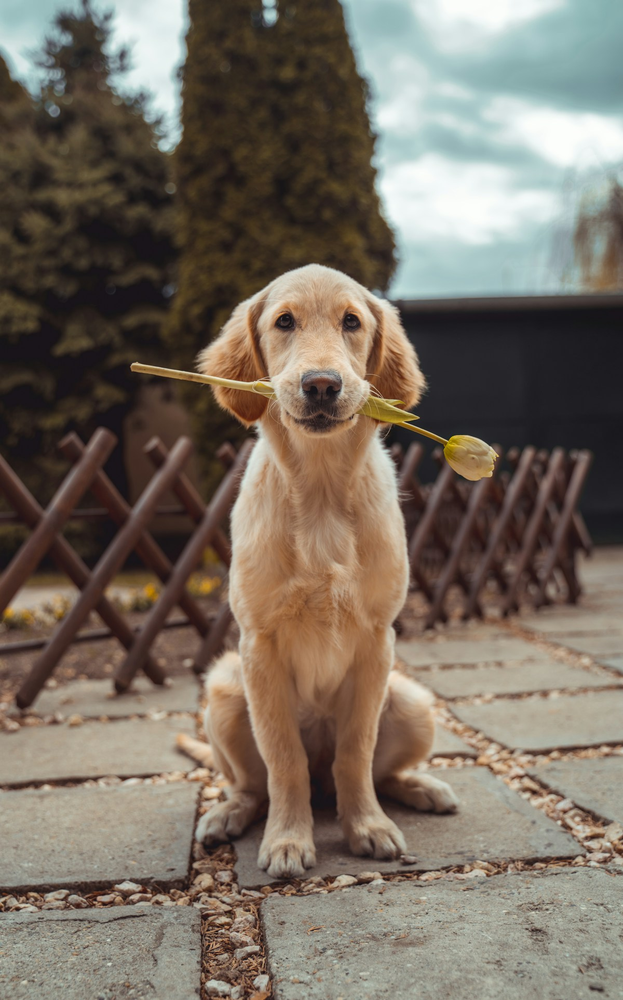

Питомец чувствует
себя иначе
Изменились аппетит, поведение или активность? Расскажите об этом при обращении и уточните порядок приёма.
Обсудить визитТОЛЬЯТТИ · ДЗЕРЖИНСКОГО, 78А
Они доверяют нам самое дорогое — себя.
А мы помогаем вам заботиться об их здоровье.
Уточните время и порядок приёма перед визитом.
Рядом, когда нужен.
Ваш «Друг».

Маленькие лапы.
Большая любовь.
01 / ЗАБОТА КАЖДЫЙ ДЕНЬ
Плановый визит или вопрос о самочувствии —
начните с разговора с клиникой.
Изменились аппетит, поведение или активность? Расскажите об этом при обращении и уточните порядок приёма.
Обсудить визитПланируете осмотр или вакцинацию? Уточните доступность услуги, стоимость и подготовку заранее.
Задать вопрос во ВКПовторный приём, результаты обследований, вопросы после визита — свяжитесь с клиникой и уточните дальнейшие действия.
Связаться с клиникойНЕ ПРОСТО СЛОВО НА ВЫВЕСКЕ
Питомец не расскажет, что его беспокоит. Но вы замечаете даже маленькие перемены. Поделитесь своими наблюдениями с врачом — с этого начинается забота.
02 / ПЕРЕД ВСТРЕЧЕЙ
Пара деталей заранее поможет
сделать визит спокойнее.
Уточните, когда можно приехать, кто ведёт приём и нужна ли предварительная запись.
Назовите вид, возраст и причину обращения. Спросите, нужна ли подготовка к визиту.
Ветпаспорт и предыдущие результаты, если они есть. Для кошки — переноску, для собаки — поводок.
Нужна срочная помощь? Позвоните и уточните возможность приёма сразу. Сообщения в соцсетях могут прочитать не сразу.
Позвонить03 / БЕЗ ЛИШНИХ ВОЛНЕНИЙ
На сайте можно перейти во ВКонтакте или позвонить. Время и порядок приёма подтверждает клиника; нажатие кнопки само по себе не создаёт запись.
Актуальную стоимость приёма, диагностики и процедур уточните по телефону или во ВКонтакте. Она зависит от причины обращения и назначений врача.
В открытых справочниках указан ежедневный приём с 10:00 до 20:00 и перерыв с 12:30 до 13:30. Перед поездкой уточните актуальный график по телефону.
Подтверждённой ссылки клиники в MAX пока нет. Используйте ВКонтакте или телефон — в клинике подскажут доступные способы связи.
04 / ДАВАЙТЕ БУДЕМ НА СВЯЗИ
Тольятти, ул. Дзержинского, 78А
Автозаводский район
Уточните часы работы перед поездкой.